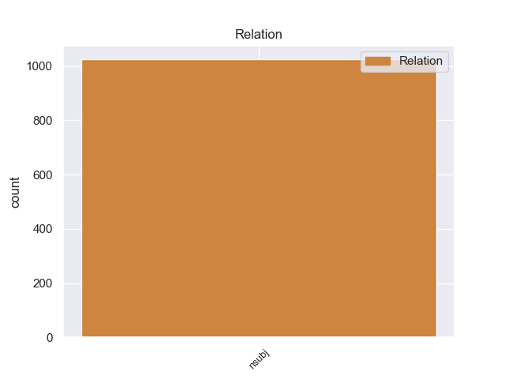
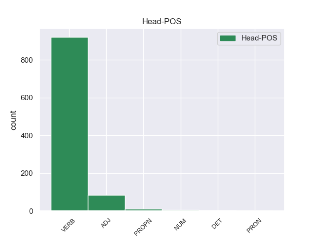
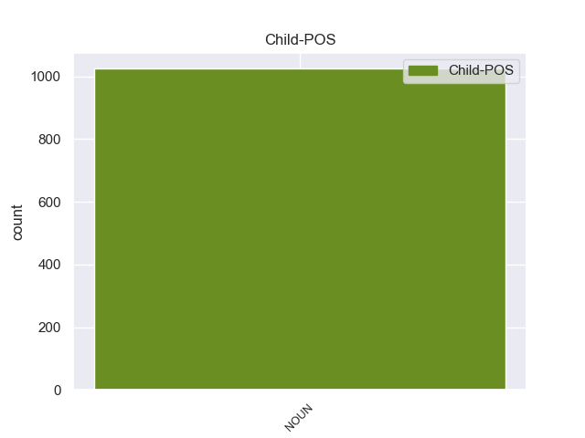

Distribution of features within this leaf



Agreement Rules sorted by frequency.
- When the dependent token is the nominal subject(nsubj) of the head token, and the head token is VERB and the dependent token is NOUN.
1 В _ _ _ _ 0 _ _ _
2 те _ _ _ _ 0 _ _ _
3 годы _ _ _ _ 0 _ _ _
4 в _ _ _ _ 0 _ _ _
5 селе _ _ _ _ 0 _ _ _
6 был быть VERB VBC Aspect=Imp|Gender=Masc|Mood=Ind|Number=Sing|Tense=Past|VerbForm=Fin|Voice=Act 0 _ _ _
7 птичник птичник NOUN NN Animacy=Inan|Case=Nom|Gender=Masc|Number=Sing 6 nsubj _ _
8 и _ _ _ _ 0 _ _ _
9 разбит _ _ _ _ 0 _ _ _
10 колхозный _ _ _ _ 0 _ _ _
11 сад _ _ _ _ 0 _ _ _
12 . _ _ _ _ 0 _ _ _
1 Однако _ _ _ _ 0 _ _ _
2 , _ _ _ _ 0 _ _ _
3 продажи продажа NOUN NN Animacy=Inan|Case=Nom|Gender=Fem|Number=Plur 7 nsubj _ _
4 были _ _ _ _ 0 _ _ _
5 не _ _ _ _ 0 _ _ _
6 так _ _ _ _ 0 _ _ _
7 хороши хороший ADJ JJH Degree=Pos|Number=Plur|Variant=Short 0 _ _ _
8 и _ _ _ _ 0 _ _ _
9 альбом _ _ _ _ 0 _ _ _
10 не _ _ _ _ 0 _ _ _
11 поднялся _ _ _ _ 0 _ _ _
12 в _ _ _ _ 0 _ _ _
13 чарте _ _ _ _ 0 _ _ _
14 Billboard _ _ _ _ 0 _ _ _
15 200 _ _ _ _ 0 _ _ _
16 выше _ _ _ _ 0 _ _ _
17 163 _ _ _ _ 0 _ _ _
18 строчки _ _ _ _ 0 _ _ _
19 . _ _ _ _ 0 _ _ _
1 По _ _ _ _ 0 _ _ _
2 данным _ _ _ _ 0 _ _ _
3 государственного _ _ _ _ 0 _ _ _
4 водного _ _ _ _ 0 _ _ _
5 реестра _ _ _ _ 0 _ _ _
6 России _ _ _ _ 0 _ _ _
7 относится _ _ _ _ 0 _ _ _
8 к _ _ _ _ 0 _ _ _
9 Окскому _ _ _ _ 0 _ _ _
10 бассейновому _ _ _ _ 0 _ _ _
11 округу _ _ _ _ 0 _ _ _
12 , _ _ _ _ 0 _ _ _
13 водохозяйственный _ _ _ _ 0 _ _ _
14 участок участок NOUN NN Animacy=Inan|Case=Nom|Gender=Masc|Number=Sing 17 nsubj _ _
15 реки _ _ _ _ 0 _ _ _
16 -- _ _ _ _ 0 _ _ _
17 Упа Упа PROPN NNP Animacy=Inan|Case=Nom|Gender=Fem|Number=Sing 0 _ _ _
18 от _ _ _ _ 0 _ _ _
19 истока _ _ _ _ 0 _ _ _
20 и _ _ _ _ 0 _ _ _
21 до _ _ _ _ 0 _ _ _
22 устья _ _ _ _ 0 _ _ _
23 , _ _ _ _ 0 _ _ _
24 речной _ _ _ _ 0 _ _ _
25 подбассейн _ _ _ _ 0 _ _ _
26 реки _ _ _ _ 0 _ _ _
27 -- _ _ _ _ 0 _ _ _
28 Бассейны _ _ _ _ 0 _ _ _
29 притоков _ _ _ _ 0 _ _ _
30 Оки _ _ _ _ 0 _ _ _
31 до _ _ _ _ 0 _ _ _
32 впадения _ _ _ _ 0 _ _ _
33 Мокши _ _ _ _ 0 _ _ _
34 . _ _ _ _ 0 _ _ _
1 С _ _ _ _ 0 _ _ _
2 терминалом _ _ _ _ 0 _ _ _
3 , _ _ _ _ 0 _ _ _
4 способным _ _ _ _ 0 _ _ _
5 к _ _ _ _ 0 _ _ _
6 пропускной _ _ _ _ 0 _ _ _
7 способности _ _ _ _ 0 _ _ _
8 более _ _ _ _ 0 _ _ _
9 чем _ _ _ _ 0 _ _ _
10 9 _ _ _ _ 0 _ _ _
11 миллионов _ _ _ _ 0 _ _ _
12 пассажиров _ _ _ _ 0 _ _ _
13 ежегодно _ _ _ _ 0 _ _ _
14 , _ _ _ _ 0 _ _ _
15 аэропорт аэропорт NOUN NN Animacy=Inan|Case=Nom|Gender=Masc|Number=Sing 18 nsubj _ _
16 Бразилиа _ _ _ _ 0 _ _ _
17 -- _ _ _ _ 0 _ _ _
18 один один NUM CD Animacy=Inan|Case=Nom|Gender=Masc|Number=Sing|NumType=Card 0 _ _ _
19 из _ _ _ _ 0 _ _ _
20 самых _ _ _ _ 0 _ _ _
21 современных _ _ _ _ 0 _ _ _
22 аэропортов _ _ _ _ 0 _ _ _
23 Бразилии _ _ _ _ 0 _ _ _
24 . _ _ _ _ 0 _ _ _
1 Актёры актер NOUN NN Animacy=Anim|Case=Nom|Gender=Masc|Number=Plur 3 nsubj _ _
2 все _ _ _ _ 0 _ _ _
3 те тот DET DT Case=Nom|Number=Plur 0 _ _ _
4 же _ _ _ _ 0 _ _ _
5 , _ _ _ _ 0 _ _ _
6 только _ _ _ _ 0 _ _ _
7 роли _ _ _ _ 0 _ _ _
8 Джеки _ _ _ _ 0 _ _ _
9 Чана _ _ _ _ 0 _ _ _
10 , _ _ _ _ 0 _ _ _
11 Дэвида _ _ _ _ 0 _ _ _
12 Кросса _ _ _ _ 0 _ _ _
13 и _ _ _ _ 0 _ _ _
14 Люси _ _ _ _ 0 _ _ _
15 Лью _ _ _ _ 0 _ _ _
16 ( _ _ _ _ 0 _ _ _
17 то _ _ _ _ 0 _ _ _
18 есть _ _ _ _ 0 _ _ _
19 Обезьяна _ _ _ _ 0 _ _ _
20 , _ _ _ _ 0 _ _ _
21 Журавль _ _ _ _ 0 _ _ _
22 и _ _ _ _ 0 _ _ _
23 Гадюка _ _ _ _ 0 _ _ _
24 ) _ _ _ _ 0 _ _ _
25 были _ _ _ _ 0 _ _ _
26 удалены _ _ _ _ 0 _ _ _
27 , _ _ _ _ 0 _ _ _
28 и _ _ _ _ 0 _ _ _
29 также _ _ _ _ 0 _ _ _
30 Виктор _ _ _ _ 0 _ _ _
31 Гарбер _ _ _ _ 0 _ _ _
32 был _ _ _ _ 0 _ _ _
33 заменён _ _ _ _ 0 _ _ _
34 Паулем _ _ _ _ 0 _ _ _
35 Шеером _ _ _ _ 0 _ _ _
36 , _ _ _ _ 0 _ _ _
37 а _ _ _ _ 0 _ _ _
38 Жан _ _ _ _ 0 _ _ _
39 - _ _ _ _ 0 _ _ _
40 Клод _ _ _ _ 0 _ _ _
41 Ван _ _ _ _ 0 _ _ _
42 Дамм _ _ _ _ 0 _ _ _
43 -- _ _ _ _ 0 _ _ _
44 Энтони _ _ _ _ 0 _ _ _
45 Леондисом _ _ _ _ 0 _ _ _
46 . _ _ _ _ 0 _ _ _
1 Удобство удобство NOUN NN Animacy=Inan|Case=Nom|Gender=Neut|Number=Sing 6 nsubj _ _
2 якорей _ _ _ _ 0 _ _ _
3 без _ _ _ _ 0 _ _ _
4 штока _ _ _ _ 0 _ _ _
5 в _ _ _ _ 0 _ _ _
6 том то PRON DT Animacy=Inan|Case=Loc|Gender=Neut|Number=Sing 0 _ _ _
7 , _ _ _ _ 0 _ _ _
8 что _ _ _ _ 0 _ _ _
9 они _ _ _ _ 0 _ _ _
10 втягиваются _ _ _ _ 0 _ _ _
11 в _ _ _ _ 0 _ _ _
12 клюзы _ _ _ _ 0 _ _ _
13 , _ _ _ _ 0 _ _ _
14 не _ _ _ _ 0 _ _ _
15 требуя _ _ _ _ 0 _ _ _
16 сложных _ _ _ _ 0 _ _ _
17 приспособлений _ _ _ _ 0 _ _ _
18 для _ _ _ _ 0 _ _ _
19 подъёма _ _ _ _ 0 _ _ _
20 и _ _ _ _ 0 _ _ _
21 уборки _ _ _ _ 0 _ _ _
22 . _ _ _ _ 0 _ _ _
Disagree Examples:
1 Ряд ряд NOUN NN Animacy=Inan|Case=Nom|Gender=Masc|Number=Sing 10 nsubj _ _
2 совместных _ _ _ _ 0 _ _ _
3 работ _ _ _ _ 0 _ _ _
4 участников _ _ _ _ 0 _ _ _
5 группы _ _ _ _ 0 _ _ _
6 после _ _ _ _ 0 _ _ _
7 2001 _ _ _ _ 0 _ _ _
8 года _ _ _ _ 0 _ _ _
9 не _ _ _ _ 0 _ _ _
10 имеют иметь VERB VBC Aspect=Imp|Mood=Ind|Number=Plur|Person=3|Tense=Pres|VerbForm=Fin|Voice=Act 0 _ _ _
11 авторства _ _ _ _ 0 _ _ _
12 , _ _ _ _ 0 _ _ _
13 начальных _ _ _ _ 0 _ _ _
14 и _ _ _ _ 0 _ _ _
15 концевых _ _ _ _ 0 _ _ _
16 титров _ _ _ _ 0 _ _ _
17 и _ _ _ _ 0 _ _ _
18 маркируются _ _ _ _ 0 _ _ _
19 грифом _ _ _ _ 0 _ _ _
20 `` _ _ _ _ 0 _ _ _
21 автор _ _ _ _ 0 _ _ _
22 неизвестен _ _ _ _ 0 _ _ _
23 '' _ _ _ _ 0 _ _ _
24 . _ _ _ _ 0 _ _ _
1 Крупных _ _ _ _ 0 _ _ _
2 озёр озеро NOUN NN Animacy=Inan|Case=Gen|Gender=Neut|Number=Plur 3 nsubj _ _
3 нет нет VERB VBC Aspect=Imp|Mood=Ind|Number=Sing|Person=3|Tense=Pres|VerbForm=Fin|Voice=Act 0 _ _ _
4 , _ _ _ _ 0 _ _ _
5 но _ _ _ _ 0 _ _ _
6 в _ _ _ _ 0 _ _ _
7 альпийском _ _ _ _ 0 _ _ _
8 и _ _ _ _ 0 _ _ _
9 горно-таёжном _ _ _ _ 0 _ _ _
10 поясах _ _ _ _ 0 _ _ _
11 в _ _ _ _ 0 _ _ _
12 истоках _ _ _ _ 0 _ _ _
13 почти _ _ _ _ 0 _ _ _
14 всех _ _ _ _ 0 _ _ _
15 рек _ _ _ _ 0 _ _ _
16 встречаются _ _ _ _ 0 _ _ _
17 озёра _ _ _ _ 0 _ _ _
18 , _ _ _ _ 0 _ _ _
19 в _ _ _ _ 0 _ _ _
20 основном _ _ _ _ 0 _ _ _
21 ледникового _ _ _ _ 0 _ _ _
22 происхождения _ _ _ _ 0 _ _ _
23 : _ _ _ _ 0 _ _ _
24 каровые _ _ _ _ 0 _ _ _
25 , _ _ _ _ 0 _ _ _
26 моренно-подпрудные _ _ _ _ 0 _ _ _
27 или _ _ _ _ 0 _ _ _
28 рождённые _ _ _ _ 0 _ _ _
29 горными _ _ _ _ 0 _ _ _
30 обвалами _ _ _ _ 0 _ _ _
31 . _ _ _ _ 0 _ _ _
1 Постановление постановление NOUN NN Animacy=Inan|Case=Nom|Gender=Neut|Number=Sing 22 nsubj _ _
2 правительства _ _ _ _ 0 _ _ _
3 о _ _ _ _ 0 _ _ _
4 политехнизации _ _ _ _ 0 _ _ _
5 школы _ _ _ _ 0 _ _ _
6 вышедшее _ _ _ _ 0 _ _ _
7 в _ _ _ _ 0 _ _ _
8 1931 _ _ _ _ 0 _ _ _
9 году _ _ _ _ 0 _ _ _
10 и _ _ _ _ 0 _ _ _
11 повысившийся _ _ _ _ 0 _ _ _
12 в _ _ _ _ 0 _ _ _
13 связи _ _ _ _ 0 _ _ _
14 с _ _ _ _ 0 _ _ _
15 этим _ _ _ _ 0 _ _ _
16 интерес _ _ _ _ 0 _ _ _
17 к _ _ _ _ 0 _ _ _
18 изучению _ _ _ _ 0 _ _ _
19 возрастных _ _ _ _ 0 _ _ _
20 особенностей _ _ _ _ 0 _ _ _
21 физиологии _ _ _ _ 0 _ _ _
22 явились явиться VERB VBC Aspect=Perf|Mood=Ind|Number=Plur|Tense=Past|VerbForm=Fin|Voice=Mid 0 _ _ _
23 дополнительными _ _ _ _ 0 _ _ _
24 факторами _ _ _ _ 0 _ _ _
25 , _ _ _ _ 0 _ _ _
26 сопутствовавшими _ _ _ _ 0 _ _ _
27 активной _ _ _ _ 0 _ _ _
28 разработке _ _ _ _ 0 _ _ _
29 в _ _ _ _ 0 _ _ _
30 этой _ _ _ _ 0 _ _ _
31 области _ _ _ _ 0 _ _ _
32 . _ _ _ _ 0 _ _ _
1 Ближайшие _ _ _ _ 0 _ _ _
2 населённые _ _ _ _ 0 _ _ _
3 пункты пункт NOUN NN Animacy=Inan|Case=Nom|Gender=Masc|Number=Plur 5 nsubj _ _
4 -- _ _ _ _ 0 _ _ _
5 Бодрово Бодрово PROPN NNP Animacy=Inan|Case=Nom|Gender=Neut|Number=Sing 0 _ _ _
6 на _ _ _ _ 0 _ _ _
7 западе _ _ _ _ 0 _ _ _
8 и _ _ _ _ 0 _ _ _
9 Парфенки _ _ _ _ 0 _ _ _
10 на _ _ _ _ 0 _ _ _
11 восток _ _ _ _ 0 _ _ _
12 . _ _ _ _ 0 _ _ _
1 У _ _ _ _ 0 _ _ _
2 пары _ _ _ _ 0 _ _ _
3 есть быть VERB VBC Aspect=Imp|Mood=Ind|Number=Sing|Person=3|Tense=Pres|VerbForm=Fin|Voice=Act 0 _ _ _
4 двое _ _ _ _ 0 _ _ _
5 детей ребенок NOUN NN Animacy=Anim|Case=Gen|Gender=Masc|Number=Plur 3 nsubj _ _
6 -- _ _ _ _ 0 _ _ _
7 сын _ _ _ _ 0 _ _ _
8 Мэйсон _ _ _ _ 0 _ _ _
9 Тру _ _ _ _ 0 _ _ _
10 ( _ _ _ _ 0 _ _ _
11 род. _ _ _ _ 0 _ _ _
12 21 _ _ _ _ 0 _ _ _
13 июля _ _ _ _ 0 _ _ _
14 1999 _ _ _ _ 0 _ _ _
15 ) _ _ _ _ 0 _ _ _
16 и _ _ _ _ 0 _ _ _
17 дочь _ _ _ _ 0 _ _ _
18 Майя _ _ _ _ 0 _ _ _
19 Роуз _ _ _ _ 0 _ _ _
20 ( _ _ _ _ 0 _ _ _
21 род. _ _ _ _ 0 _ _ _
22 14 _ _ _ _ 0 _ _ _
23 апреля _ _ _ _ 0 _ _ _
24 2002 _ _ _ _ 0 _ _ _
25 ) _ _ _ _ 0 _ _ _
26 . _ _ _ _ 0 _ _ _